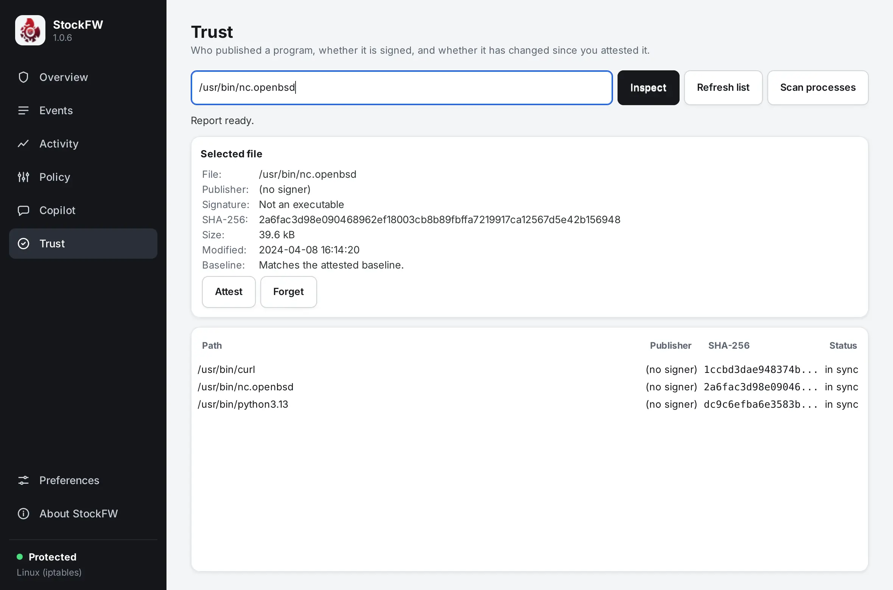

Trust
A firewall decides by address and port, but the question behind most of its events is “do I trust the program that made this connection?”. The Trust page answers that for one file at a time: who signed it, what its hash is, and whether it is still the file you approved.

Inspect a file#
Type or paste a path and press Inspect. The report shows the file, its publisher, its signature state, the SHA-256 of its bytes, size, modification time, and how it compares with the baseline. Hashing a large executable takes a moment and runs off the main thread; the page says “Hashing and checking the signature…” and refuses a second task until the first finishes, so two reports can never be mixed up. Verified ui-trustview-smoke
| Signature line | Meaning |
|---|---|
| Signed and verified | An Authenticode signature whose digest matches the file and whose chain stands. |
| Signed but invalid | There is a signature, but it does not hold: the file was edited after signing, the certificate expired or is distrusted. This is the interesting negative. |
| Not signed | A Windows executable with no signature. |
| Not an executable | No MZ header. Hashing it still makes sense; signing does not apply. |
| Signature not checked | No signature provider on this platform. This is what Linux shows, honestly, instead of “unsigned”. |
Windows The check uses WinVerifyTrust and CryptQueryObject with revocation lookups turned off, so it never touches the network and never hangs on a machine without one. The publisher is the signer’s display name. Verified test_trust_engine
Linux There is no platform signature to read, so the page offers the hash, the file facts and the baseline. Package-manager signatures (dpkg, rpm) are not consulted. Known gap
Scan running processes#
Scan processes lists the executable behind every process this account can see and assesses each against the baseline, so a new or changed program shows up without you knowing its path. On Linux the paths come from /proc/<pid>/exe; processes owned by other users are readable only as root, and the status line says so when the list is empty for that reason.
Attest and forget#
Attest records the inspected file, its hash, its publisher and the time in the baseline, after a dialog that shows the path and the hash and says that the attestation goes to the audit log. From then on the file’s row reads one of:
- in sync: the bytes on disk match the attested hash;
- CHANGED: same path, different bytes. The report says which hash the baseline remembers. An update you installed produces this too, which is the point: you look, and attest again if it was you;
- missing: attested earlier, now gone;
- unreadable: the file could not be read at all;
- new: never attested.
Forget removes a path from the baseline, with the same kind of confirmation. Refresh list reassesses every row. Both attest and forget append a line to audit.log (trust-attest, trust-forget). If the baseline cannot be written, the page says “Attested in memory, but not saved to disk” rather than pretending.
The baseline file#
trust.csv in your profile folder, one quoted row per path: path, SHA-256, size, modification time, signature state, publisher, first seen, last seen. Paths compare without regard to letter case, because Windows paths do. A row that does not parse is skipped, never the whole file; a missing file is an empty baseline. STOCKFW_TRUST_FILE points the app and the tests at another file. See Files and formats. Verified test_trust_engine
What it is for#
Trust does not change the firewall. It gives you a second kind of evidence next to the Events page: when the Copilot reports a program doing something new, Inspect tells you whether the program itself is still what it was. The two together are how you tell an update from a replacement.